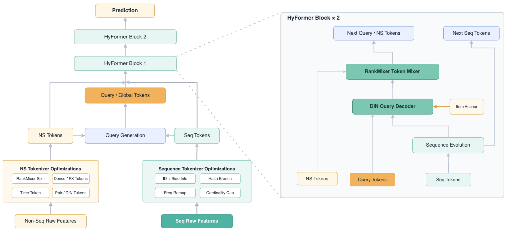
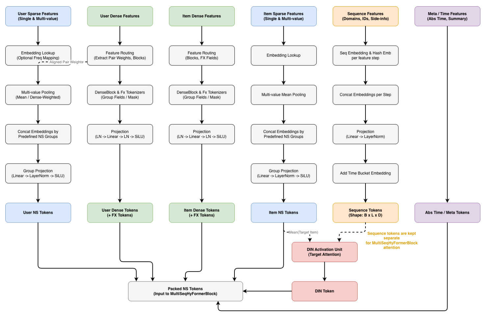
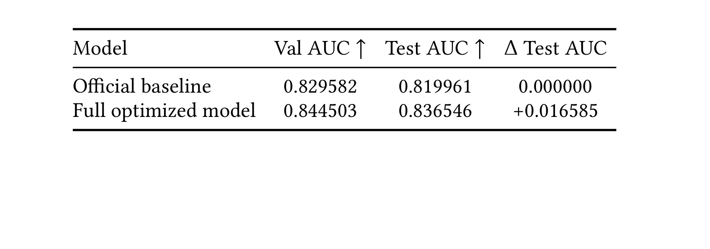
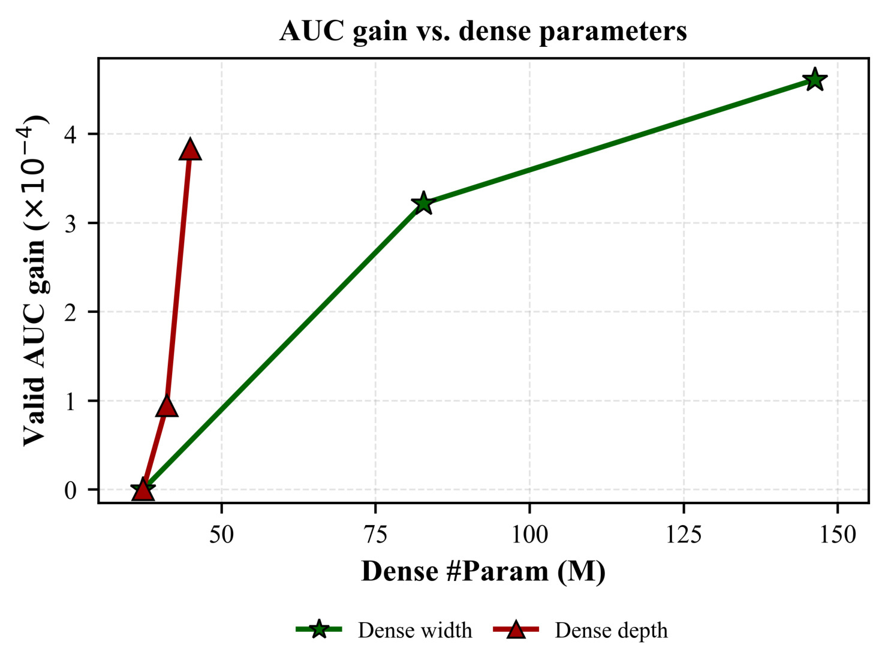
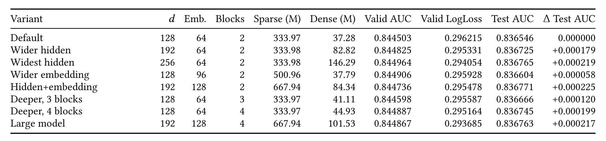
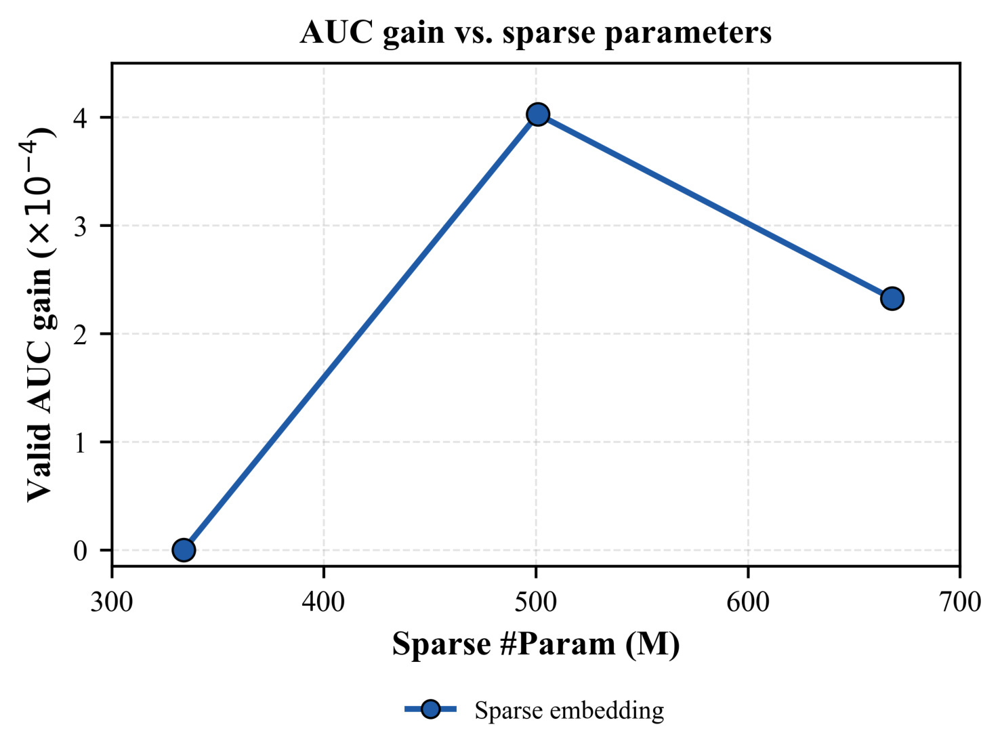
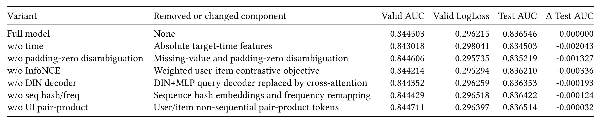
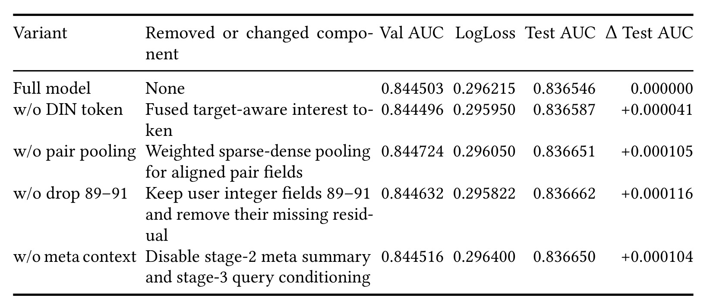
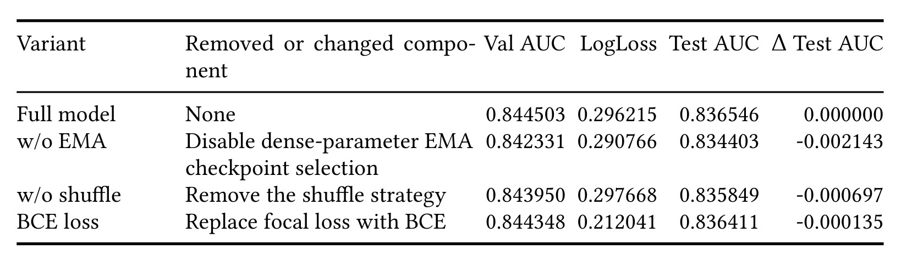

STAR：面向 PCVR 预估的结构化 Tokenization 与目标感知兴趣表征
STAR 是清华大学与北京大学作者面向 KDD Cup 2026 Tencent UniRec Challenge PCVR 赛题给出的完整技术方案。一作 Yimeng Xu 的主机构为清华大学，合作者来自北京大学与清华大学；arXiv 作者元数据把第二作者写作 Haorui Zhang，而 PDF 首页印作 Ruihao Zhang，这里保留这一来源差异，不擅自判断哪一写法应更正。论文入口为 arXiv:2608.12986，公开日期是 2026 年 8 月 13 日；截至本轮核验，未找到可确认的独立公开代码仓库。
这篇论文的重点不只是给 HyFormer 再叠一层网络，而是把工业 PCVR 中容易被忽略的输入契约、候选相关兴趣和训练/推理一致性同时纳入建模。作者用正文和附录的单次受控实验给出绝对 AUC、LogLoss 和消融结果；需要特别区分的是，arXiv 摘要只描述相对结论，没有披露绝对数字，下面的数字均来自 PDF 主文或附录，而不是从摘要补推。
现代 PCVR 排序模型既要联合建模异构非序列特征、多行为用户序列和对候选物品敏感的兴趣，又要承受高基数稀疏字段、缺失值以及训练与推理不一致；现实基线常因 embedding 成本跳过长尾字段，并用与候选无关的序列摘要削弱兴趣相关性。
1. 背景和问题
PCVR，也就是 post-click conversion rate，估计的是用户已经与候选物品发生点击等交互后进一步转化的概率。它处在推荐或广告排序链路的靠后位置，既受用户长期偏好影响，也高度依赖当前候选物品、上下文时间和稀疏身份特征。若只用 Wide&Deep、DeepFM、DCN 一类非序列交叉结构，历史行为被压成粗糙统计；若只用 DIN、BST 或 BERT4Rec 式序列编码器，海量非序列字段与多个行为域又难以在同一骨干中充分交互。HyFormer、MixFormer、OneTrans 等路线尝试把两类输入统一成 token，再以 Transformer-style 或 token-mixing block 联合处理，STAR 正是在这条统一骨干路线上补工业数据缺口。
论文把问题形式化为：给定用户 $u$、候选物品 $i$、非序列特征 $\mathbf{x}_{u,i}$ 以及 $K$ 个行为序列 $\mathcal{S}_u$，模型输出转化概率：
符号解释：$u$ 和 $i$ 分别是用户与候选物品，$\mathbf{x}_{u,i}$ 汇集用户、物品、上下文等非序列字段，$\mathcal{S}_u=\{S_u^{(1)},\ldots,S_u^{(K)}\}$ 表示多个行为域，$f_\theta$ 是待训练的排序模型，$\hat y_{u,i}$ 是转化概率。这个定义看似标准，但 STAR 关心的是输入怎样进入 $f_\theta$：字段过宽是否直接跳过，零到底是有效值还是 padding，历史摘要是否随候选变化，以及推理时的字段顺序和映射是否仍与训练 checkpoint 对齐。
第一类矛盾来自高基数与可学习性之间的成本冲突。完整 user ID、item ID 或长序列 ID 表可能占用不可接受的稀疏参数，工程基线往往干脆跳过超阈值字段。代价是最常见的 ID 和长尾 ID 一起消失，模型虽然节省显存，却失去身份、重复行为和细粒度偏好的信号。即便保留字段，训练时生成的 frequency map、cap table 或 hash 规则若没有随 checkpoint 一起进入推理，完全相同的整数也可能指向不同 embedding row，这不是轻微噪声，而是语义错位。
第二类矛盾来自用户兴趣不是候选无关的固定向量。同一用户可能同时有多个行为域和多种意图；一个全局池化向量很难同时回答“面对物品 A，哪段历史相关”和“面对物品 B，哪段历史相关”。形式上的 self-attention 可以学习序列内部结构，却不保证抽取出来的 query 真正锚定候选物品。STAR 因而把 candidate item 同 query 和每个时间步显式组合，用差值与逐元素乘积构造 DIN-style 匹配特征，再更新每个序列域的 query，而不是只在最终 MLP 才把用户向量与物品向量拼接。
第三类矛盾来自离线分数、概率校准和工程稳定性并不总同向。挑战赛把 AUC 作为主排序指标，LogLoss 只作为校准诊断；focal loss 可能提高少数类或困难样本的排序，却让绝对概率变差。EMA、两级 shuffle、固定 global batch 也会改变 AUC，但它们不是新的表示模块。论文把主建模消融、容量扩展、训练协议消融和失败尝试拆开报告，这一点很重要：完整系统的增益不能全部归功于一个“STAR layer”，更不能从离线 leaderboard 直接外推到线上转化、延迟或收入。
从推荐系统研究视角看，STAR 把 feature interaction、sequence modeling 与数据契约放进同一实验框架：前两者决定模型有没有表达候选相关兴趣的能力，后者决定这份能力能否在推理时保持相同语义。它与大模型方向的联系不是模型规模，而是 tokenization 和 checkpoint contract 的共性。LLM 的 tokenizer vocabulary、special token 和 position scheme 一旦错配，权重就会失去含义；STAR 中的 frequency map、padding index、hash table 与字段顺序承担相似角色。差别在于推荐输入不是单一离散文本流，而是多个稀疏域、稠密域和行为域的并行结构，必须显式保留字段身份、序列边界与候选条件。这样的对照也说明“全部变成 token”并不意味着可以忽略 schema：token 只有在产生规则稳定、缺失语义明确且训推一致时，统一骨干才有可比较的输入。
2. 方法
2.1 Structured Feature Tokenization：把被跳过的异构信号重新变成 token
STAR 的总体骨干沿用多序列 HyFormer 思路：非序列字段先变成 user、item、dense 和 auxiliary tokens；每个行为域形成独立 sequence-token matrix；query generator 结合非序列 token 与序列摘要产生序列特定 query；随后两层 HyFormer block 交替完成序列演化和 token interaction，最后进入预测头。真正的改动起点是把“字段怎样变成 token”视为模型的一部分，而不是训练脚本中的无关预处理。

Figure 1 左侧把原始输入分成 non-sequential raw features 与 sequence raw features：前者经过 RankMixer-style tokenization、缺失值与时间优化，后者经过 hash table、frequency map 和 cardinality cap。中间的 Query Generation 不是一次性汇总全部历史，而是产生 sequence queries，再与 NS tokens 一起进入 HyFormer。右侧放大框显示每个 block 内部先做 Sequence Evolution，经 item anchor 条件化的 DIN Query Decoder 更新 query token，再用 RankMixer Token Mixer 同其他非序列 token 交互。图中虚线表示相同 block 的放大关系，不是额外网络分支。预测头位于两层 block 之后，因此高基数恢复和目标感知不是旁路特征，而会共同影响最终排序表示。
对超高基数整数域，cardinality capping 先按频率保留头部 ID 的专属 embedding row，把罕见尾部折叠到共享 unknown bucket。frequency remapping 再把被保留的 frequent IDs 映射到紧凑连续下标，避免用原始最大 ID 决定表大小。行为序列若仍超过 embedding threshold，则进入固定大小的 hash embedding branch。三步的作用各不相同：cap 控制词表，remap 保住高频身份，hash 让超阈值序列仍有可学习信号；它们不能简单概括成一次取模，因为取模会把高频关键 ID 也和随机尾部冲突。
零值处理同样被结构化。dense block 可追加 non-zero indicator mask，从而区分真实数值零和补齐零；整数 ID 在启用时整体平移，让 index 0 永远留给 padding。对全数据零方差字段，作者不再嵌入原始 ID，而是丢弃值、保留 missing indicator，并将其投影成 residual dense signal。时间特征包含目标时刻的 time-of-day 与 weekend 指示，也可加入序列周期侧信息；sample-level meta summaries 则包括序列长度、截断比例、recency span 与 sentinel 统计。不过附录消融显示 meta context 删除后测试 AUC 略升，因此它更像待审慎选择的候选输入，不应与稳定正贡献混写。

Figure 2 从左到右列出 user sparse、user dense、non-user dense、item sparse、sequence 和 meta/time 六路输入。user sparse 经过 frequency pruning、multi-value pooling 和 group projection；user dense 先做 feature pruning，再产生 dense tokens；non-user dense 还会附加 masks 并形成较少的 dense field tokens；item sparse 经 embedding lookup 和 pooling；sequence 每步先查 embedding，再补时间 embedding；meta/time 则直接作为侧信号。底部可见这些输出汇合为 packed NS tokens 与 DIN token。橙色注释还提示一部分 aligned sparse-dense pairs 会转为 weighted pooling，这说明 dense 值不只是独立拼接，也可以充当匹配 sparse embedding 的权重。
2.2 Target-Aware Interest Representation：让每条序列围绕候选物品解码
目标感知 query decoder 接收 sequence-specific query $\mathbf q$、候选 anchor $\mathbf h_i$ 和各时间步状态 $\mathbf h_t$。它先用原 query、候选、差值和逐元素乘积构造候选条件表示：
符号解释：$[\cdot]$ 表示向量拼接，$\odot$ 表示逐元素乘积，$\mathbf q-\mathbf h_i$ 表达方向差，$\mathbf q\odot\mathbf h_i$ 表达逐维匹配，$\mathrm{MLP}_{\mathrm{target}}$ 把组合特征压回目标条件空间。相比直接把候选加到最终打分头，这一步在读取序列之前就改变查询方向，让不同候选对同一历史产生不同关注分布；下一步再以这个候选条件 query 为基准，对每个时间步计算 DIN-style 相关性：
符号解释：$\mathbf h_t$ 是第 $t$ 个行为 token，$\alpha_t$ 是跨有效时间步归一化后的权重；score MLP 同时查看历史状态、目标 query、差值和逐元素交互。padding 必须在 softmax 前被 mask，否则补齐位置会吸收概率质量。这个 decoder 与通用 cross-attention 的差别不在“也有权重”，而在手工暴露了 DIN 中常用的相减和乘积匹配特征，令候选相关性更直接。据此得到的池化兴趣 $\mathbf z=\sum_t\alpha_t\mathbf h_t$ 不直接替换 query，而是经残差更新：
符号解释：$\mathbf z$ 是候选条件下的历史摘要，$\mathbf q_{\mathrm{out}}$ 是送回 HyFormer block 的新 query。残差项保留 query generator 原先聚合的全局信息，update MLP 再吸收兴趣与候选交互。如果序列很短、全是 unknown 或候选 anchor 本身不可靠，$\mathbf z$ 仍可能退化；残差连接让模型不必完全依赖这次池化，但不能消除数据缺失。
2.3 User-Item Interaction Enhancement 与加权 InfoNCE
交互增强有三种不同粒度。第一，aligned sparse-dense pair pooling 让 dense 值充当对应 sparse multi-hot embedding 的权重，避免把本属同一语义的 ID 与数值重复建模。第二，user/item 非序列 token 做逐元素乘积并经投影，生成显式 pair-product token，让后续 token mixer 不必完全从隐式注意力中发现二阶匹配。第三，作者还对原始序列 embedding 使用 candidate item 计算全局 DIN interest，并把多个行为域的 $\mathbf z$ 经过 MLP 融合为额外非序列 token：
符号解释：$g$ 是 DIN activation MLP，$\mathbf h_i$ 直接作为 query，$\mathbf z$ 是一个行为域的候选相关兴趣。它与上一节的 query decoder 容易混淆：前者产出附加全局 DIN token，后者更新每条序列的 query。附录 Table 4 显示移除 fused DIN token 后 Test AUC 反而增加 $0.000041$，作者也解释 query decoder 已经提供强目标感知能力，额外 token 可能冗余。因此稳定证据支持的是 DIN-style query decoder，不是把所有目标感知变体都无条件叠加。在显式前向交互之外，辅助目标还在 batch 内把 matching user-item pair 当正例、其余配对当 in-batch negatives，并同时计算 user-to-item 与 item-to-user 两个方向：
符号解释：$\mathbf U$、$\mathbf V$ 是一个 mini-batch 中池化 user/item token 投影到共享空间后的矩阵，$\mathbf t$ 是对角 matching index，$\tau=0.07$ 是温度。论文说明 converted 与 non-converted 样本使用不同 pair weight，但未在公式旁披露具体权重；因此可以确认它是 label-aware weighting，不能从 PDF 推出精确权重表。固定 global batch 很关键，因为负样本集合变化会直接改变这个损失的难度和梯度尺度。训练时再把这个对齐项按时间权重加入主排序损失，形成最终目标：
符号解释：$\mathcal L_{\mathrm{main}}$ 默认取 focal loss，$\lambda(t)$ 在早期训练从 $0.1$ 衰减到 $0.01$，还受主损失比率的上限约束。InfoNCE 只在训练期提供 representation alignment 梯度，推理无需计算 batch 相似度矩阵；pair-product 与 query decoder 则保留在前向路径。该设计把对比学习当正则而非主任务，避免辅助目标在主损失已经很小时反客为主。
2.4 Training and Inference Consistency：把映射与结构纳入 checkpoint 契约
本小节先把主损失与运行协议连起来看，因为固定样本集合、shuffle 和 checkpoint selection 会改变同一公式得到的模型。主预测损失可以是普通 BCE，它直接对应二元转化概率的负对数似然，也是 LogLoss 的训练形式：
符号解释：$y\in\{0,1\}$ 是转化标签，$\hat y$ 是预测概率。BCE 直接优化概率似然，因而与 LogLoss 口径一致；但在正负极不平衡时，大量容易负例可能主导梯度，使排序模型把容量消耗在已经分对的样本上。STAR 因而默认改用 focal loss：
符号解释：正例时 $p_t=\hat y$、$\alpha_t=\alpha$，负例时 $p_t=1-\hat y$、$\alpha_t=1-\alpha$；默认 $\gamma=2.0$、正类权重 $\alpha=0.366$。$(1-p_t)^\gamma$ 压低容易样本的贡献，使训练更关注困难样本。它可能提升 AUC，却不保证输出概率校准，后文 BCE 与 focal 的 LogLoss 分歧正是这一边界。
一致性机制首先固定 global-batch manifest，使不同 GPU 数的运行仍消费等价全局样本集合，从而让 in-batch negatives 和消融更可比。数据顺序采用两级 buffer shuffle：先随机化 row group 读取顺序，再在跨多个 batch 的内存 buffer 内做行级置换。训练还使用 bf16 mixed precision、gradient accumulation、dense-parameter EMA 和严格 checkpoint sidecar。默认配置为 $d_{model}=128$、sparse embedding 维度 64、两层 HyFormer、每序列两个 query token、global batch size 5880，seq_a/seq_b 截断 256，seq_c/seq_d 截断 512。
推理不是重新扫描数据“猜”模型结构，而是从保存的训练配置重建 dataset 与 model，并重载 cardinality-cap table、frequency map、字段 schema、token 顺序和结构超参。 这使 embedding layout 成为 checkpoint 契约的一部分。若遗漏任何 sidecar，即便权重文件本身能加载，ID 到 row 的含义也可能变化；相反，严格重建虽然增加运维工件，却能把一种隐蔽且严重的线上 silent failure 转化为可版本化检查。
3. 实验结果
3.1 数据、指标与可比口径
实验使用 KDD Cup 2026 Tencent UniRec Challenge 的 PCVR 数据，训练集含 20,000,000 个样本。每个样本包含匿名 user/item identifier、非序列整数与稠密特征、四个行为序列域、目标时间戳和二元转化标签。除明确的消融外，各配置共用 row-group held-out validation split、字段顺序、feature pipeline、优化器、序列截断长度与 checkpoint 选择规则。这种控制让单次消融的方向有解释力，但论文没有报告多随机种子均值、方差或显著性区间，因此 $10^{-4}$ 量级差异仍需复验。
主指标是 Validation AUC 与 Test AUC，因为挑战任务关注排序；Validation LogLoss 是概率校准和稳定性诊断。AUC 只关心正例是否排在负例前，LogLoss 则会重罚过度自信的错误概率，两者不应互相替代。摘要只说 temporal context 增益最大、其余组件带来较小收益，并未给出绝对 AUC/LogLoss；主文表格才提供下述数字，所以精读时应把“摘要层结论”和“正文层定量证据”分开。
3.2 完整系统相对官方基线

Table 1 显示 official baseline 的 Val/Test AUC 为 $0.829582/0.819961$，full optimized model 为 $0.844503/0.836546$，对应验证与测试绝对增量 $0.014921/0.016585$。这是一项明显的系统级改善，但表中只有两行，无法把总增益分配给 tokenization、目标感知、训练 recipe 或容量变化；后续消融才承担归因任务。正文还说明 full model 的 LogLoss 更高，因此作者选择以 AUC 为主、LogLoss 为诊断。若业务真正需要可解释转化概率或下游出价，较高 AUC 不能自动补偿校准退化，至少还需要 temperature scaling、isotonic regression 或独立校准集验证。
3.3 容量扩展：dense 较平滑，sparse 并不单调

Figure 3 把默认 full model 设为零点，绿色星线表示扩大 $d_{model}$，红色三角线表示增加 HyFormer block。横轴是 dense parameter 数，纵轴是 Validation AUC gain，单位为 $10^{-4}$。$d_{model}$ 从 128 到 192、256 时，验证增益约为 $3.22$ 和 $4.61$ 个 $10^{-4}$；block 从 2 增到 3、4 时，也保持正向且以较少 dense 参数取得增益。图支持“适度扩大 width/depth 有效”，但横轴只覆盖少数手选点，不能证明更大模型会继续单调提升，更不能比较训练时长、显存或推理 latency，因为这些指标没有公开。尤其红线只有默认、三层和四层三个离散点，不足以排除某个中间深度或不同 seed 改变排序。

Table 2 补足曲线背后的绝对数字。默认配置含 333.97M sparse 与 37.28M dense 参数，Test AUC 为 0.836546；$d_{model}=192/256$ 时 dense 参数增到 82.82M/146.29M，Test AUC 增加 0.000179/0.000219。3/4 blocks 只把 dense 参数增到 41.11M/44.93M，却增加 0.000120/0.000199，说明在这些点上加深比单纯加宽更参数高效。Large model 达 667.94M sparse、101.53M dense 参数，Test AUC 增加 0.000217，没有优于 widest hidden 的 0.000219；这已经提示容量收益很小且不是简单按总参数排序。

Figure 4 更直接地显示 sparse scaling 的非单调性：sparse 参数从 333.97M 增至 500.96M 时 Validation AUC 从 0.844503 升至 0.844906，再增至 667.94M 时回落到 0.844736。最后一点还同时把 $d_{model}$ 从 128 改为 192，所以它不是干净的单因素 sparse experiment；测试 AUC 没有同样回落，也不能据此断言更大词表在测试上必然更好。对工业系统的实际含义是：先修复 cap/remap/hash 和字段利用率，再扩表可能比直接堆 embedding 更可靠；论文尚未给显存、吞吐或延迟，无法计算单位成本 AUC。中间点的峰值也可能来自 remap 覆盖率与碰撞率的折中，原文没有发布这两项统计，因而这里只能把曲线读成容量告警，不能归因为某个具体字段族。
3.4 主建模消融：时间与零值处理主导，pair-product 很弱

Table 3 只保留“移除后 Test AUC 下降”的模块，因而是一张经过方向筛选的正贡献表。去掉 absolute target-time features 下降 $0.002043$，远大于其他项；去掉 missing/padding-zero disambiguation 下降 $0.001327$。这说明挑战数据中上下文时间和输入语义正确性比复杂交互层更重要。InfoNCE、DIN decoder 和 sequence hash/frequency remapping 的下降分别为 $0.000336$、$0.000193$、$0.000124$，是较小但方向一致的单次证据。UI pair-product 仅下降 $0.000032$，很可能处在 seed noise 附近。表内 Validation AUC 与 Test AUC 也并非完全同向，例如去掉 zero disambiguation 后 Validation AUC 略升，提醒 leaderboard generalization 与 held-out split 可能不同。
这张表还帮助区分用户指定的几个核心机制。structured tokenization 的价值并不平均：零值消歧证据强，高基数序列恢复较弱；target-aware interest 中 DIN query decoder 有小幅正向证据，而额外 fused DIN token 并不稳定；InfoNCE 是除时间和零值处理外最大的建模项，但它没有改善 LogLoss。因而更保守的复现顺序应是时间与输入契约优先，其次 InfoNCE 和 query decoder，再尝试高基数序列恢复，最后才评估 pair-product 等边缘交互，而不是一次开启全部组件后只看总分。
3.5 混合消融、训练协议与失败尝试

Table 4 专门收纳移除后 Test AUC 没有下降的组件。去掉 fused target-aware DIN token、aligned pair pooling、user integer fields 89–91 与 meta context，Test AUC 反而分别增加 $0.000041$、$0.000105$、$0.000116$、$0.000104$。这些正增量都很小，单次运行不足以证明模块“有害”，却足以否定把它们当稳定贡献。作者给出的机制解释也合理：query decoder 已经使各 sequence query 强目标感知，再加全局 DIN token 可能稀释其他 token；meta summaries 容易拟合 validation split 的长度或时间分布；pair pooling 则可能与现有 token interaction 重复。字段 89–91 的结果还说明删掉无效字段、保留 missing residual 有时反而减少过拟合。

Table 5 把 recipe 与架构分离。关闭 dense-parameter EMA 使 Test AUC 下降 $0.002143$，幅度甚至超过多数建模组件；移除两级 shuffle 下降 $0.000697$。把 focal 换为 BCE 时 Test AUC 只下降 $0.000135$，但 Validation LogLoss 从 0.296215 大幅降至 0.212041。这个结果清楚显示完整系统分数不仅来自表示方法，也来自 checkpoint selection 与数据顺序；同时 focal 的困难样本重权有利于 AUC，却牺牲概率校准。复现者若只照抄网络、不重建 EMA、global batch 与 shuffle，很可能无法接近论文分数。
附录还记录了重要失败路径。FSGM adversarial training 在 preliminary round 有效，却不能稳定整合到 final；preliminary 数据量约为 final 的 $1/19$，对应序列 encoder 偏好也从 Transformer 转向 attention-free SwiGLU。离散 day-of-week 在后续数据分布下引入噪声；把 dense compression 从一枚 token 扩到 2–5 枚在 baseline 单独有效，却破坏最终 ensemble 的压缩瓶颈；item ID 只有在特定 dropout ratio 下有效。额外 global DIN token 与 meta context 出现冗余或 split overfitting，更长序列和不同 window query 也没有显著收益。这些结果表明 STAR 更像对数据契约和容量分配的竞争方案总结，而不是每个候选模块都成立的统一理论。
4. 总结
4.1 我的判断
STAR 最有价值的贡献是把工业推荐中常被视为“特征工程”的问题提升为可审计的建模契约：高基数字段不是简单丢弃，零值不再与 padding 混淆，候选相关性在 sequence query 阶段进入，frequency map 与模型结构必须随 checkpoint 一起恢复。实验显示，最大的稳定增益来自 temporal context、zero disambiguation 和训练 EMA，而不是最复杂的交互 token；这使论文的证据比“提出多个模块、全部有效”更可信。InfoNCE 与 DIN query decoder 有较小正向信号，高基数 sequence recovery 也有增益，但 pair-product 已接近单次噪声尺度。
4.2 工程复现顺序
复现时可采用分层最小改动。第一层固定字段 schema、padding 约定、cap/remap/hash sidecar 和推理重建，先验证相同样本在训推两端产生相同 token ID。第二层加入 time-of-day/weekend 与 zero disambiguation，因为它们的消融幅度最大。第三层固定 global batch、两级 shuffle 和 EMA，再比较 BCE/focal 的 AUC 与校准。第四层才加入 DIN query decoder、InfoNCE 和高基数序列恢复，每项至少多 seed 验证。pair pooling、fused DIN token、meta context 和 pair-product 应保持可开关，先证明增量再进入线上路径。若用于真实排序，还应同步测 embedding 内存、P95/P99 latency、吞吐与 sidecar 回滚可靠性。
4.3 局限与后续跟进
局限至少有四点。其一，全部证据来自单一 KDD Cup 2026 Tencent UniRec Challenge 离线数据，没有公开线上 A/B，不能外推真实业务转化。其二，多个 $10^{-4}$ 级差异只来自单次运行，没有 seed 方差或显著性，组件稳定性未知。其三，摘要不含绝对 AUC/LogLoss，虽正文披露表格，但数据和代码尚未核验公开，复现实验仍受限。其四，论文没有报告 latency、吞吐、显存和 sidecar 运维成本，无法判断高基数恢复与更大 batch 的服务代价。其五，focal 提高排序但恶化 LogLoss，说明概率校准需独立处理。其六，匿名日志虽降低直接身份暴露，长期兴趣、频次和转化标签仍可能放大反馈回路与公平性风险。
后续应优先做三类验证。第一，在至少三个随机种子下重跑 Table 3/4，给 $0.000032$–$0.000336$ 的小增益补置信区间，并确认 fused DIN、pair pooling 与 meta context 的方向。第二，建立训练配置到推理实例的逐字段 checksum 与 replay test，验证 frequency map、cap table、hash allowlist、截断长度和 token 顺序能被精确恢复。第三，在跨时间 split 和真实流量 shadow test 中同时测 AUC、LogLoss、ECE、分组召回、P99 latency 与内存，检查 temporal/meta features 是否受分布漂移。进一步还可比较 query decoder 与标准 cross-attention 的等参数版本，并对 weighted InfoNCE 的 pair weight、温度和衰减曲线做系统扫描，从而把挑战赛 recipe 转化为更可泛化的 PCVR 设计结论。